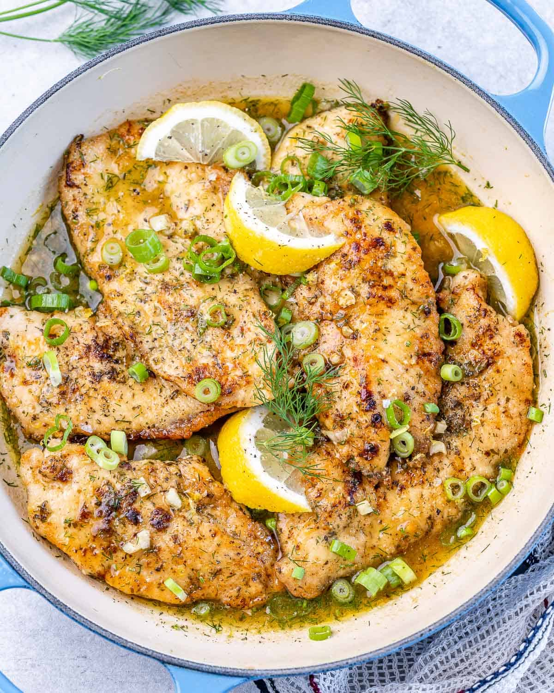

Lemon Chicken Breast

Description
This easy and delicius dish can be prepared within minutes!
These easy lemon chicken breasts are perfect for busy weeknights when you want
a warm hearty dinner or even for lunch. In a few steps and with a couple of
ingredients you can have this tasty food ready.
Ingredients
- Chicken cutlets
- Salt and pepper
- Flour
- Oil
- Garlic
- Lemon
- Chicken broth
- Fresh dill
- Green onions
Steps
- First, separate all of the ingredients so they are easy to grab when you need them.
Be sure to measure everything.First, separate all of the ingredients so they are easy
to grab when you need them. Be sure to measure everything.
-
Next, season the chicken cutlets with Italian seasoning, salt, and pepper. Dredge each
chicken cutlet into a bowl of flour. Be sure to evenly coat the chicken.
-
Heat the olive oil in a large, non-stick skillet over medium heat. Make sure the oil gets
hot enough. Next, cook the chicken in small batches until each culet is golden and cooked
on both sides.
-
Set the chicken cutlets aside on a plate while you prepare the creamy sauce.
-
Next, add the lemon juice and chicken broth to the pan. Be sure to scrape off the brown
pieces from the bottom of the skillet with a spatula.Next, add the lemon juice and chicken
broth to the pan. Be sure to scrape off the brown pieces from the bottom of the skillet
with a spatula.
-
As soon as the broth starts to bubble, stir in the freshly chopped dill and return the chicken
back to the pan. Coat the chicken with the sauce.
-
Sprinkle the cooked chicken with green onions and remove it from heat. Garnish with lemon
wedges if desired.